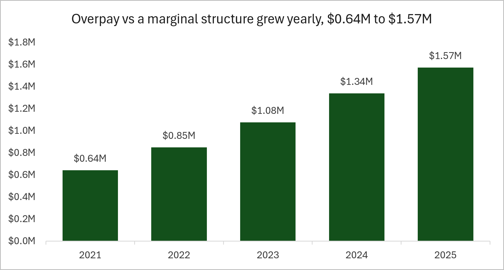
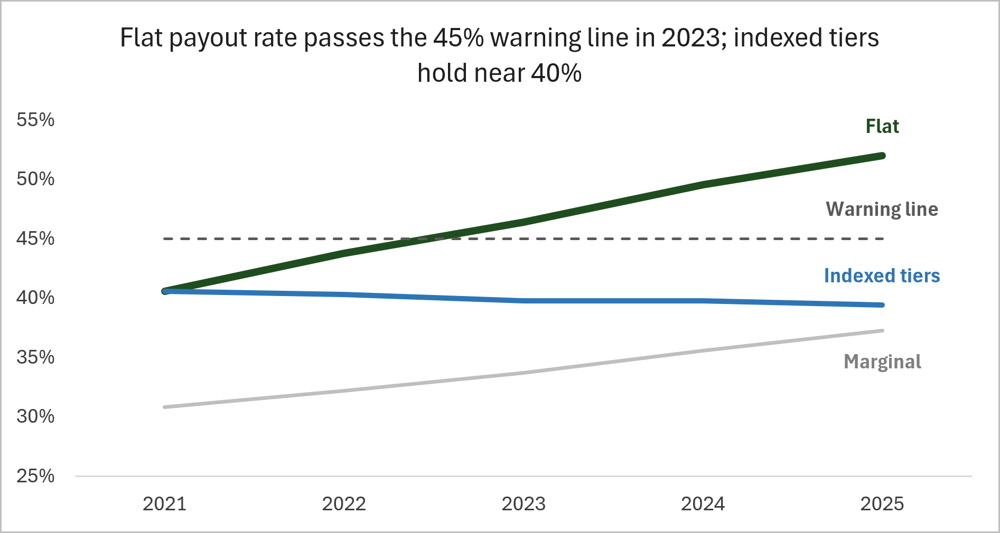
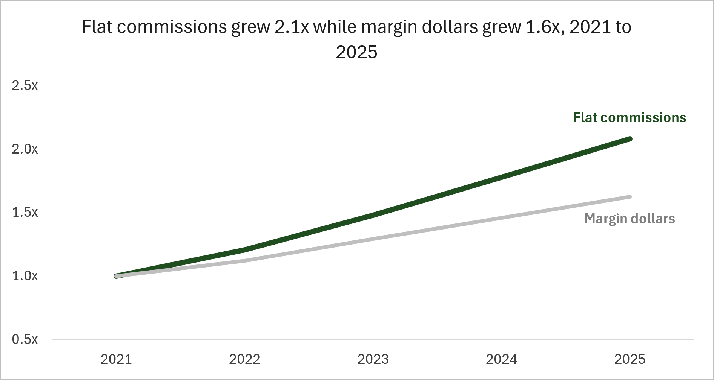

Does the flat-tier commission structure overpay, and if so, where and by how much? Yes. It paid about $5.5 million more than a marginal structure would have over 2021 to 2025, and the gap grew every year.
Reps earn commission on margin dollars (50% of net sales). The rate is set by the rep's monthly net sales tier, and the rate applies to all of that month's margin dollars, not only the dollars above the tier edge.
Flat structure (the current plan). A rep with $49,999 in net sales earns 33% of $25,000 of margin, about $8,250. At $50,000 the rate jumps to 42% on the same margin and the commission becomes $10,500. One more dollar of sales is worth $2,250.
Marginal structure (the benchmark). Each rate applies only to the sales inside its own band, so pay rises smoothly. The overpay in this project is the flat commission minus the marginal commission on the same sales.
Every number is traceable. Each rate and threshold lives on one Assumptions sheet, tagged to a rule in rules_spec.md, and every calculation reads from it through named ranges.
| Monthly net sales from | Rate | Overpay per rep-month |
|---|---|---|
| $0 | 25% | $0 |
| $25,000 | 33% | $1,000 |
| $50,000 | 42% | $3,250 |
| $75,000 | 51% | $6,625 |
| $100,000 | 60% | $11,125 |
Overpay is constant within a tier, so it rises like a staircase.
Annual overpay rose from $0.64 million in 2021 to $1.57 million in 2025, a 2.4x increase, while sales grew 62%.

Sales grow, reps climb into higher tiers, and a flat structure pays the higher rate on every dollar once they get there. The overpay is a feature of the plan's design, not a one-time event.
Region 4 carries the most overpay in dollars because it is the largest. Per rep, Region 1 is worst: its 2025 payout rate hit the 60% maximum.
| Region | Seats | 5-year overpay | 2025 payout rate | 2025 overpay per rep-month |
|---|---|---|---|---|
| 1 | 2 | $1,040,250 | 60.0% | $11,125 |
| 2 | 5 | $1,431,250 | 53.4% | $7,323 |
| 3 | 5 | $1,349,000 | 50.0% | $5,969 |
| 4 | 8 | $1,660,000 | 48.4% | $5,290 |
| Company | 20 | $5,480,500 | 52.0% | $6,552 |
Sources: Overpay!H4:H7, Commissions!F13:F17, Overpay!F14:F18.
Region 1's per rep-month overpay equals the top-tier value exactly ($11,125), which means every Region 1 rep-month in 2025 sat in the highest tier. Once a region is in the top tier, the payout rate is pinned at the plan's 60% maximum, so the structure has no room left to absorb more growth.

The tier edges invite gaming, so it was worth checking whether the cliffs explain the overpay. They explain about 8% of it.
145 rep-months landed within 5% above a tier edge, where a cliff bump of $1,000 to $4,500 applies. The bump cost $450,875 across the five years, or 8.2% of the $5.48 million overpay.
The remaining 92% is structural. The flat plan overpays at every level of sales, because it applies the higher rate to all margin dollars, not only the dollars in the higher band. Fixing the cliffs alone would not fix the plan.
| Tier edge | Rep-months just over | Cliff bump | Cost |
|---|---|---|---|
| $25,000 | 2 | $1,000 | $2,000 |
| $50,000 | 57 | $2,250 | $128,250 |
| $75,000 | 59 | $3,375 | $199,125 |
| $100,000 | 27 | $4,500 | $121,500 |
| Total | 145 | $450,875 |
Commissions rose 108% from 2021 to 2025. Margin dollars rose 62%.

Company quota attainment stayed between 96.9% and 100.4% in every year, so reps were not beating their targets by a widening margin. Quota has no effect on rep pay in this model, so attainment is context, not a cause. The extra pay came from the structure, not from extra performance.
Three plans were run over the same 1,200 rep-months. Indexing moves every tier edge up each year by the company's 15% growth target, so a rep needs to beat the target to climb a tier.
Higher rate on every margin dollar once a tier is reached.
Same structure, same rates. Tier edges grow 15% per year, which stops the drift.
Rates apply only inside each band. Saves the most but changes how every rep is paid.
Indexing is the least disruptive change: reps keep the same tiers and rates, and pay still rises when they beat the growth target. It holds the payout rate near 40% through 2025, where the flat plan reaches 52.0%.
The marginal structure saves more, but it rewrites how reps earn commission. I would take it to review next, with a conversation about how reps would respond.
| Year | Flat | Indexed | Marginal |
|---|---|---|---|
| 2021 | 40.6% | 40.6% | 30.8% |
| 2022 | 43.8% | 40.3% | 32.2% |
| 2023 | 46.4% | 39.8% | 33.7% |
| 2024 | 49.5% | 39.8% | 35.5% |
| 2025 | 52.0% | 39.4% | 37.3% |
Payout rate = commission / margin dollars. Source: Scenarios!B13:D17. Red = above the 45% warning line.
The workbook is the deliverable. SQL and Python feed it clean data, and a Checks tab proves the totals agree before anything is reported.
Pipeline. A Python generator creates 60 months of synthetic sales (seed 42). Python loads them into SQL Server, SQL validates the load, and SQL derives one row per rep per month (1,200 rows). Python exports that extract, and Excel does the rest.
Excel techniques. An Excel Table with structured references, named ranges tied to an Assumptions sheet, XLOOKUP for the tier rate, SUMPRODUCT for the marginal commission, SUMIFS and COUNTIFS for the summaries, and conditional formatting tied to the assumptions.
Checks. Seven tie-outs compare the workbook against the SQL totals and against itself: net sales ($85,324,654.72), row count (1,200), overpay, marginal commission, margin dollars, quota grid and blank calculations. All pass.
The synthetic-data generator was written with AI assistance (Claude). The SQL, the loader and export scripts, the Excel model and the analysis are my own work.
| Tab | What it holds |
|---|---|
| Assumptions | Every rate and rule, tagged to rules_spec.md |
| Rep_month | 1,200 rows with commission and overpay |
| Sales and margins | Net sales and margin dollars by region and year |
| Commissions | Flat commission and payout rates |
| Overpay | By region, year and rep-month |
| Quota | Quota and attainment by region and month |
| Cliff exposure | Rep-months near each tier edge and the cost |
| Scenarios | Flat vs indexed vs marginal |
| Checks | Tie-outs, all PASS |
| Charts | Data behind the three figures |
| Limitation | Effect on the findings |
|---|---|
| The data is synthetic | The patterns show how the plan behaves, not what a real company would see |
| No behavioral response | Reps do not change how they sell when the plan changes, so $3.09M is an estimate, not a forecast |
| Indexing keeps the cliffs and the flat-rate overpay | It slows the drift but does not fix the structure. The marginal plan is the next review |
| Growth ran near 13%, not the 15% target | An index set at 15% runs slightly ahead of actual growth, so the indexed rate edges down over time |
| Quota has no effect on pay | Attainment is context only |
The central finding of the Territory Quota & Commission Model, 2021 to 2025.